讀取中…
| 順序 | 啟動 | 角色 | 狀態 | 血量（目前 / 最大） | 所在地圖 | 監控 |
|---|
ⓘ 功能說明
今日死亡：每個角色當天死亡的次數（午夜換日重新計算），會保留每天的紀錄。
| 角色 | 每日道具到期 | 預定更換 | 狀態 | 銀行每日禮包 | 自動更換 | 視窗條件 |
|---|---|---|---|---|---|---|
| 讀取中… | ||||||
ⓘ 功能說明
| 角色 | 寵物 | 雇傭兵 | 魔法娃娃 |
|---|---|---|---|
| 讀取中… | |||
| 角色 | 第 1 格 | 第 2 格 | 第 3 格 | 第 4 格 | 第 5 格 | 第 6 格 | 手動指定鍵位 |
|---|---|---|---|---|---|---|---|
| 讀取中… | |||||||
ⓘ 功能說明
Logs\LagProbe_日期.csv。看到動作變慢、寵物撿東西變慢時，按「標記 Lag」，方便之後比對過圖前後的資料（診斷包會一起收）。| 角色 | 登入至今 | 記憶體 | CPU | 視窗回應 | 前景 | 最後量測 | |
|---|---|---|---|---|---|---|---|
| 還沒有資料 | |||||||
| 角色 | 目前回應 | 過圖次數 | 狀態 | |
|---|---|---|---|---|
| 還沒有資料 | ||||
| 時段 | 金幣 | 死亡 | 採集 | 採集秒 | 走路秒 | 每顆循環 | 循環 > 110 秒 | 異常事件 |
|---|---|---|---|---|---|---|---|---|
| 讀取中… | ||||||||
ⓘ 功能說明
ⓘ 功能說明
| 開 | 角色 | 開啟鍵 | 下次 | 背包命運箱子 | 狀態 |
|---|---|---|---|---|---|
| 讀取中… | |||||
ⓘ 功能說明
ⓘ 運作說明
進階設定（背包、不好走的礦、顏色挑法）——所有角色共用
ⓘ 運作說明
進階設定（測試流程、重開後接續）
ⓘ 定時啟動怎麼運作
搭公車設定（NPC、傳送卡、對話框行數）
| 勾選 | 地圖 | 怪物 | 進度 | 任務組 | 備註 | 打怪點 |
|---|---|---|---|---|---|---|
| 讀取中… | ||||||
ⓘ 功能說明
| 隊長 | 角色 | 要邀請的隊員 | 狀態 | |
|---|---|---|---|---|
| 讀取中… | ||||
| 隊長 | 隊員 | 狀態 | 說明 | 下次嘗試 |
|---|---|---|---|---|
| 沒有設定隊員 | ||||
| 接受 | 角色 | 只接受這些隊長 | 狀態 |
|---|---|---|---|
| 讀取中… | |||
ⓘ 功能說明
| 帳號 | 遊戲視窗 | 加入切換 | 停留 | 切換後按鍵 |
|---|
| 角色 | 遊戲視窗 | 記錄位置 | 大小 | 狀態 |
|---|
| 清理 | 名稱 | 狀態 | 操作 |
|---|
需要準備什麼
- 遊戲：已安裝好、手動登入過一次，確認可以正常進入遊戲。
- 遊戲畫面大小：視窗模式 1024×768，Windows 顯示縮放建議 100%（不是 100% 時程式會自動換算，但請不要用其他解析度）。
- 遊戲帳號：想掛幾隻角色就準備幾組帳號密碼（密碼存在這台電腦、用 Windows 加密，不會上傳）。
- Discord（想收通知才需要）：一個自己能管理的伺服器和文字頻道，下一章會教你建立 Webhook。
- 授權：第一次使用請到「設定 → 其他 → 使用授權」輸入授權碼。所有功能（包含自動採礦）只要授權有效就能使用，不分授權種類。
認識主畫面
第一次打開會看到「首頁」。左邊是選單：首頁、角色、收益統計、功能、操作教學（就是這裡）、設定。
 1
2
3
4
1
2
3
4
- 1左側選單：換頁用。設定在最下面。
- 2三個大按鈕：啟動勾選帳號、開始監控、F10 停止自動操作。
- 3「目前啟動的功能」：綠色＝開著，灰色＝關閉，點一下跳到該功能的設定。
- 4角色列表：狀態、血量、所在地圖，每個角色可以分開開關「監控」。
啟動與登入設定
到「設定 → 🚀 啟動與登入」。最上面的「設定檢查」會自己檢查目前設定能不能用，只有沒通過的項目才需要處理。
 1
2
3
4
1
2
3
4
- 1設定檢查：遊戲程式、登入位置、角色血量，三項都亮綠燈就可以用了。
- 2六個步驟：帳號 → 遊戲視窗 → 登入位置 → 角色血量 → 所在地圖 → 開始監控，照順序做。
- 3按這裡選擇遊戲的啟動程式（遊戲資料夾裡的 Launcher.exe）。自動登入、重新登入時會用它開遊戲。
- 4改完設定後按這個，重新檢查一次。
登入後選擇角色
如果一個遊戲帳號底下有多隻角色，在「登入後選擇角色」指定重新登入後要進哪一隻（依順序或依角色名稱）。選項要等該帳號的遊戲開著時才讀得到，讀過一次就會記住。
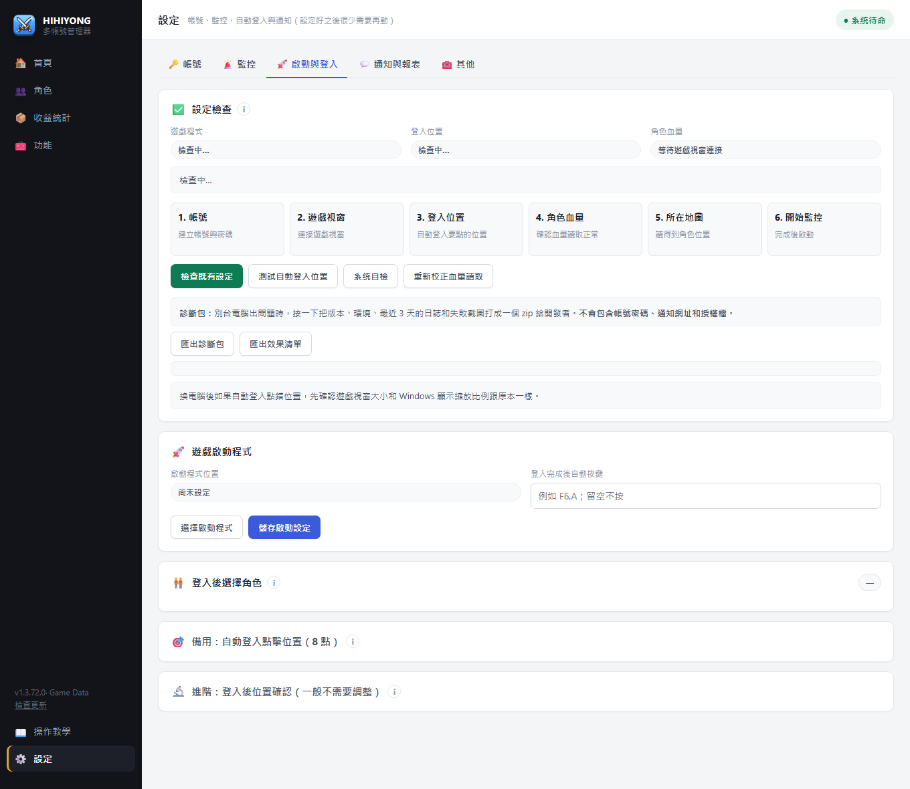
1- 1登入後選擇角色：每個帳號各一列。登入畫面的位置是直接讀遊戲，不需要先記點。
Webhook 是什麼？
Webhook 是 Discord 頻道給的一組專屬網址：程式把訊息丟到這個網址，那個頻道就會收到通知（斷線、死亡、每日報表…）。下面用 Discord 電腦版的實際畫面示範，約 1 分鐘就能完成。
步驟 1：打開要收通知的頻道的設定
進入伺服器，把滑鼠移到要收通知的文字頻道上，右邊會出現兩個小圖示，按⚙（編輯頻道）。
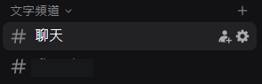
1- 1按 ⚙「編輯頻道」。（建議另外建一個專門收通知的頻道，例如 #通知。）
步驟 2：選「整合」
頻道設定的左邊選單裡點整合。
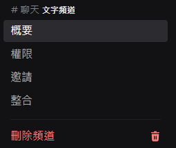
1- 1點「整合」。
步驟 3：建立 Webhook
在「Webhook」那一列按建立 Webhook（如果這個頻道已經有 Webhook，按左上角的「新 Webhook」）。
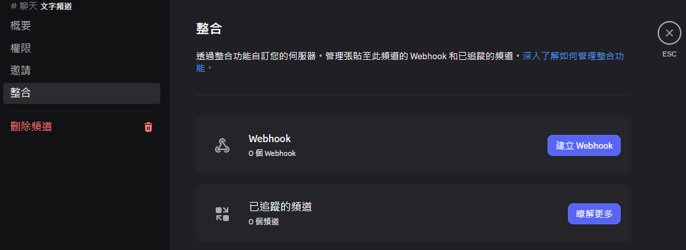
1- 1按「建立 Webhook」。
步驟 4：命名、確認頻道、複製網址
Discord 會建立一個 Webhook（預設名字很怪，可以改）。
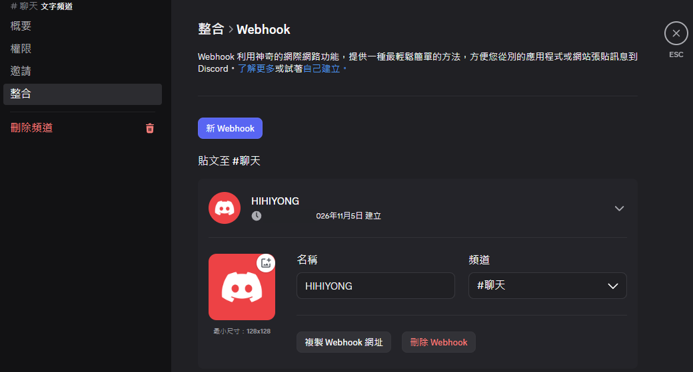
1 2 3- 1名稱：改成你認得的，例如 HIHIYONG；通知裡會用這個名字發言。
- 2頻道：確認是要收通知的那個頻道，可以從這裡換。
- 3按「複製 Webhook 網址」。接著切回本程式貼上（下一步）；改了名稱要先按下方的「儲存變更」。
把網址貼進程式
到「設定 → 💬 通知與報表」，照編號填：
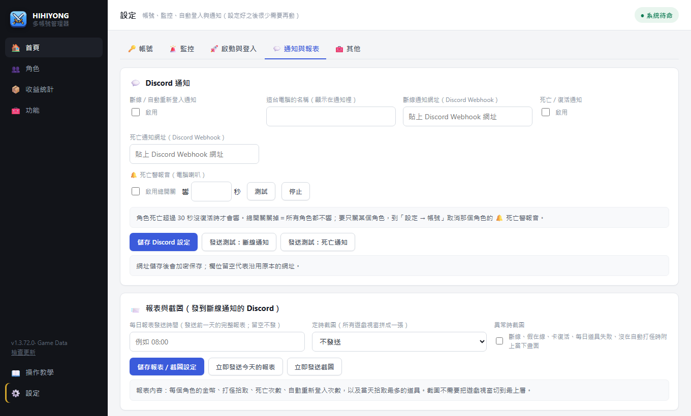
1 2 3 4 5 6 7- 1勾選「啟用」＝斷線 / 自動重新登入時發通知。
- 2這台電腦的名稱：多台電腦各自設定時，通知裡會顯示是哪一台。
- 3貼上「斷線通知」用的 Webhook 網址（貼上後顯示成圓點）。
- 4勾選＝角色死亡 / 復活時發通知。
- 5貼上「死亡通知」用的 Webhook 網址。
- 6填完一定要按這個才會存。
- 7按測試，Discord 頻道收到訊息就成功了；死亡通知也有自己的測試鈕。
每日報表與截圖（選用）
報表和截圖會發到斷線通知那個頻道：每天固定時間送出前一天的收益報表、定時把所有遊戲視窗拼成一張圖、異常時附上當下畫面。
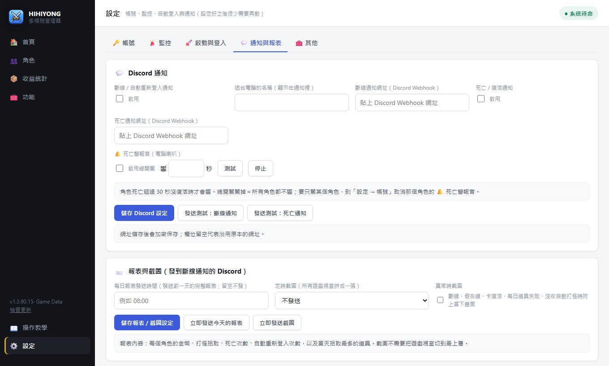
1 2 3 4- 1每日報表發送時間，例如 08:00；留空不發。
- 2定時截圖：不發送，或每 30 分鐘到 4 小時一次。
- 3異常時截圖：斷線、假在線、卡復活等狀況附上畫面。
- 4設定完按這裡儲存；旁邊兩顆可以立即發一份測試。
建立帳號並設定選項
到「設定 → 🔑 帳號」。新增的帳號預設不納入監控，填好資料、連上遊戲視窗後再開。
 1
2
3
4
5
6
1
2
3
4
5
6
- 1按這裡新增一個空白帳號。
- 2名稱（顯示用）：隨你取，建議和遊戲角色名一樣，自動連接視窗時會依角色名配對。
- 3遊戲帳號。
- 4遊戲密碼（加密保存；之後修改其他選項時留空就會保留原密碼）。
- 5各種開關：納入監控、批次啟動、死亡偵測 / 通報 / 警報音、假在線偵測與自動恢復、優先重新登入（隊長）。
- 6全部填好按「儲存帳號」。
這些選項怎麼選
- 納入監控：開了才會被偵測死亡、斷線、假在線。
- 批次啟動時開啟：按首頁「啟動勾選帳號」時，會一起把這個帳號的遊戲開起來並自動登入。
- 死亡偵測 / 死亡通報 / 死亡警報音：死亡超過 30 秒沒復活才會響警報；通報會發到 Discord。
- 假在線偵測 / 假在線自動恢復：角色看起來在線但其實沒動（血量、經驗、金幣、背包都沒變）時提醒，自動恢復會重新登入。建議只對長時間掛機打怪的角色開自動恢復。
- 優先重新登入（隊長）：大家一起斷線時，勾了的角色最先登回來。
連接遊戲視窗
帳號存好、遊戲也開著之後，在下面的「遊戲視窗綁定」把帳號和遊戲視窗配對。一般按「自動連接」就好。
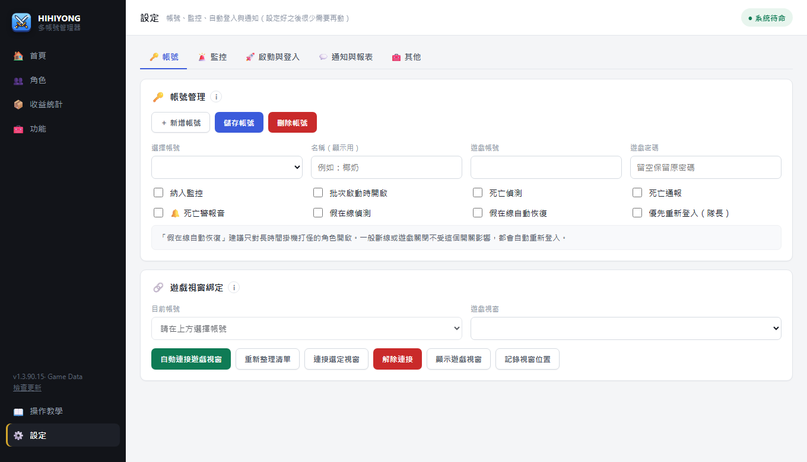
1 2 3- 1依遊戲中的角色名稱自動配對。
- 2配錯時，手動從這裡選遊戲視窗，再按「連接選定視窗」。
- 3不確定是哪一個視窗時，按這個把它顯示出來確認。
啟動、監控、緊急停止
- 回到「首頁」。在角色列表勾選要啟動的角色（「啟動」欄）。
- 按啟動勾選帳號：程式會開遊戲、自動登入、連接視窗。已經開著遊戲的話可以跳過這步。
- 按開始監控：開始偵測死亡、斷線、假在線，並在需要時自動重新登入。程式會記住「監控中」：管理程式重開（或當掉重開）後約 30 秒自動接續監控，採礦 / 每日討伐這些要「監控中」才動的功能不用你再按一次；按「停止監控」或 F10 緊急停止則不會自動接續。
- 任何時候想停下所有自動操作，按F10（鍵盤）或畫面上的紅色按鈕；遊戲不會被關閉。
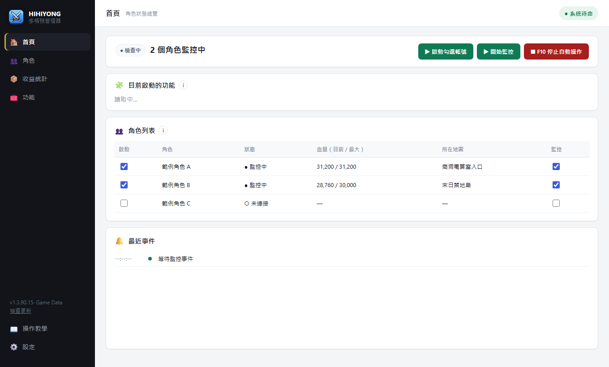
1 2 3 4- 1開遊戲、自動登入。
- 2開始偵測與自動恢復。
- 3緊急停止（也可以直接按鍵盤 F10）。
- 4每個角色的「監控」欄可以單獨開關。
縮小程式也能看狀態（小窗）
想把程式縮小又想看狀態：到「設定 → 🧰 其他」勾選「縮小程式時顯示小窗」。縮小主視窗後，螢幕右下角會出現一個永遠在最上面的小窗，滑鼠滾輪或 ◀ ▶ 切頁：① 概況 ② 角色清單 ③ 功能開關（忘記勾的功能可以直接在小窗開）。
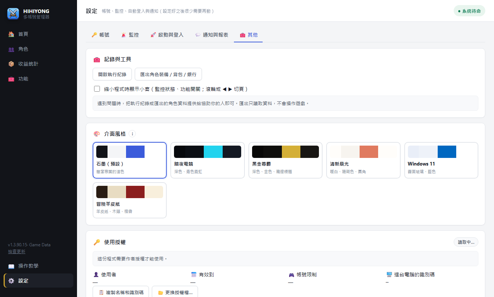
1- 1勾選就啟用小窗。
角色狀態
「角色」→「👥 角色狀態」：每個角色一張卡，看血量、活動圖、今日死亡次數、是否假在線。
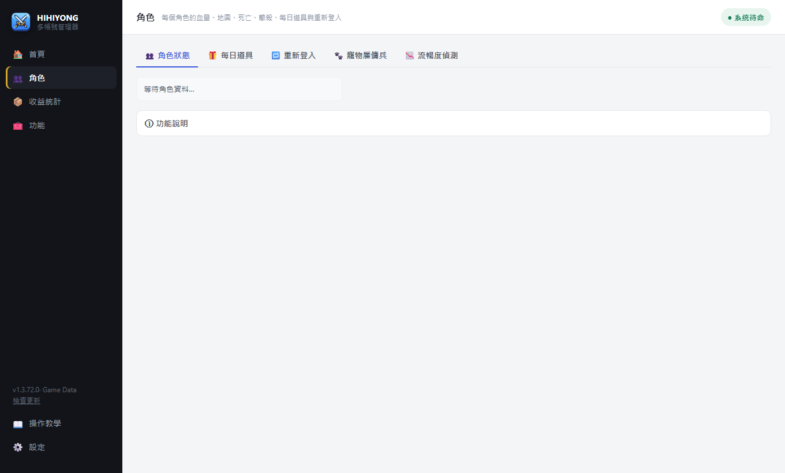
1- 1每個角色的血量卡片（連接遊戲後才有資料）。
每日道具 / 重新登入
「🎁 每日道具」處理每天要領的道具；「🔁 重新登入」統計自動重新登入的成功率與最常卡住的步驟，不影響任何自動操作。
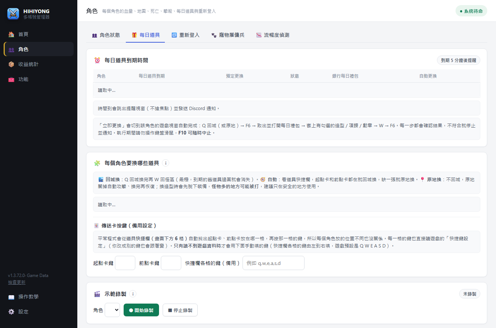
1- 1每日道具設定與狀態。
寵物 / 雇傭兵 / 魔法娃娃監測
掛機中發現寵物、雇傭兵或魔法娃娃不在外面，就按快捷欄裡那張卡叫出來。只在遊戲資料確認「不在外面」時才按，避免「開關型」的卡被按成收起來。
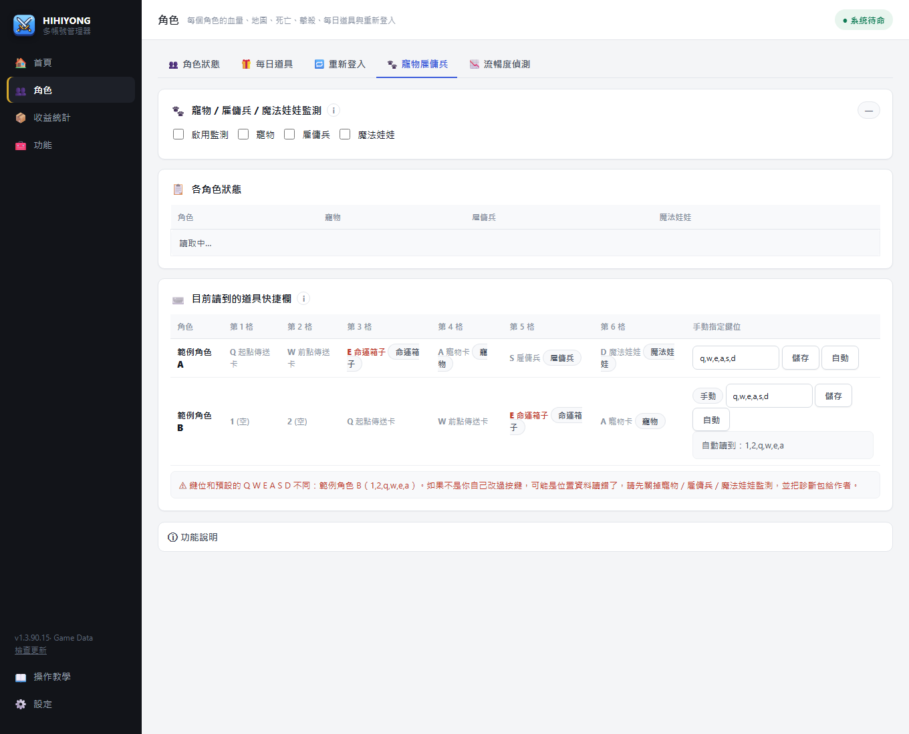
1 2 3 4- 1勾選要監測的種類：寵物、雇傭兵、魔法娃娃。
- 2每個角色目前的狀態。
- 3「目前讀到的道具快捷欄」：程式按哪一格的鍵叫出寵物 / 雇傭兵 / 魔法娃娃，用的就是這裡讀到的。和遊戲畫面下方那排不一樣就是讀錯了；命運箱子那一格是紅字。
- 4鍵位和預設的 Q W E A S D 不同時會出現警告。
快捷欄讀不準時：手動指定鍵位
如果上面讀到的鍵和遊戲裡不一樣，在該角色右邊的「手動指定鍵位」填 6 個鍵（用逗號分開，依第 1～6 格，例如 q,w,e,a,s,d），按儲存，之後所有用到快捷欄的功能（寵物 / 傭兵 / 娃娃、每日道具更換）都改用你指定的鍵。旁邊有「手動」標記時，按自動就改回程式自己讀。
流暢度偵測
「久掛延遲量測」每 30 秒記錄記憶體、CPU、視窗回應時間；看到動作變慢時按「標記 Lag」方便比對。「變慢自動過圖」偵測到變慢會自動換圖恢復。
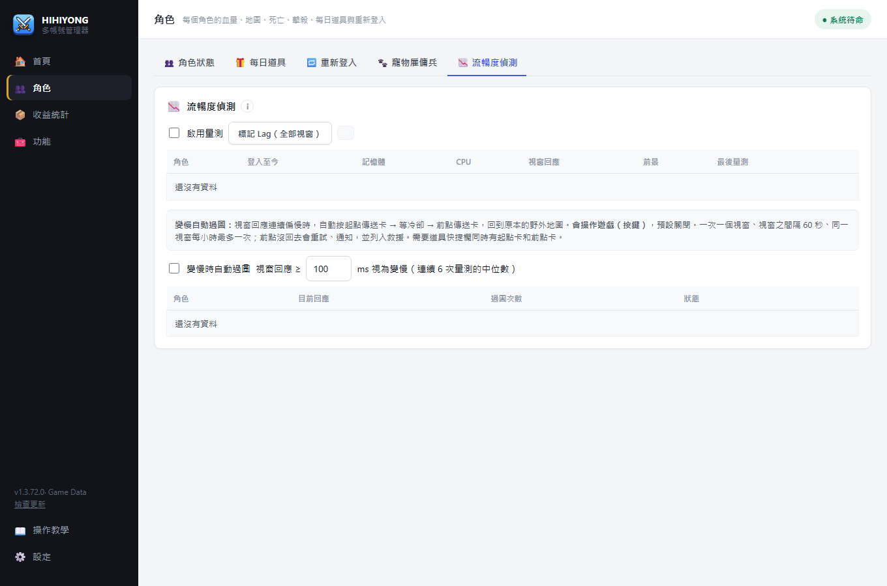
1 2- 1久掛延遲量測開關。
- 2變慢自動過圖開關（預設關閉）。
🎁 命運箱子
定時自動開命運箱子：切到遊戲視窗按快捷鍵、確認背包數量減少才算成功、再切回原本視窗。每個角色可自選。你正在操作鍵盤滑鼠時不會切視窗（停手一段時間才動作）。
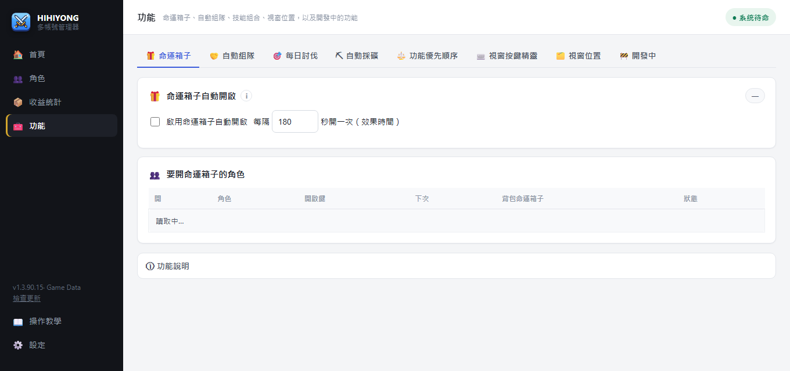
1- 1開關、間隔秒數、每個角色的按鍵。
🤝 自動組隊
全部登入完成後，由隊長邀請設定好的隊員；隊員斷線重登會自動補邀。可設定兩台電腦組隊（對方要先是好友）。預設關閉。
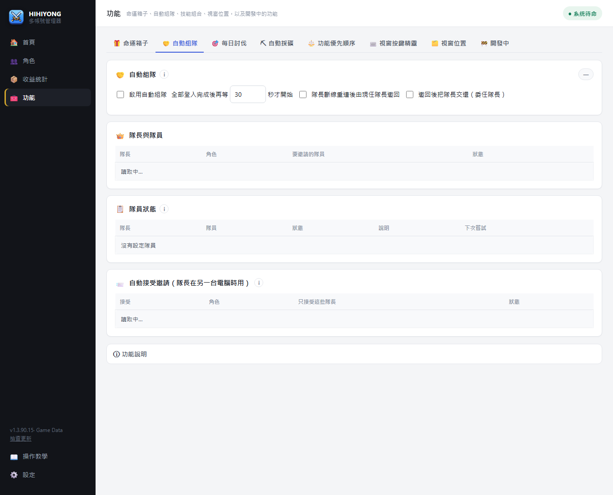
1- 1先勾隊長，再勾這位隊長要帶的隊員。
🎯 每日討伐
自動完成每日討伐：搭公車到目標地圖、走到固定點、開自動打怪、看進度換圖，死亡會復活後繼續。選角色與地圖後按啟動；啟動前會等你停手 2 秒。每個角色可以設定每天幾點自動開始，跑完會統計每張圖花的時間。
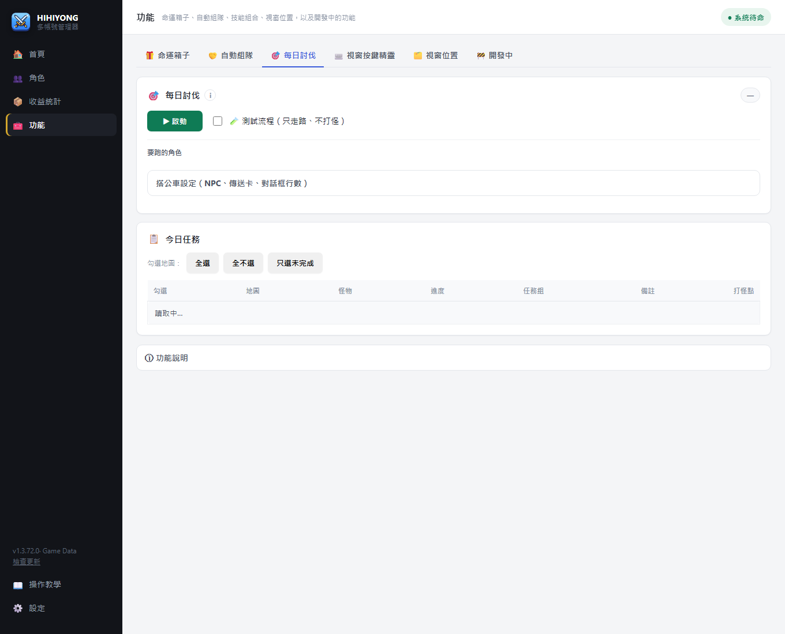
1 2 3 4- 1狀態列：左邊是啟動 / 停止，右邊一行摘要（目前角色、進度、還有幾張圖沒打完）；有警告時整列變紅。
- 2角色卡片：勾選要跑的角色，看到每個角色現在在做什麼。卡片裡的「⏰ 每天」填時間，可多個（例如 05:10, 13:00），按 Enter 或「儲存」。
- 3定時啟動失敗時的紅色提醒（按「知道了」清除），同時會通知 Discord。
- 4最近執行統計：每張圖實際花的時間、總時長（開始到結束）和實際作業時間。
每日討伐：每天定時啟動
- 在角色卡片的「⏰ 每天」填時間（24 小時制，可填多個，逗號分開），按儲存；留空 = 不定時。每個角色各自設定。
- 時間一到，只要這個角色是「監控中」且遊戲視窗還在，就自動開始跑每日討伐（不需要再按啟動），跑完所有勾選的地圖自己停止。管理程式要開著才會執行。
- 如果角色原本就勾選著，跑完不會取消勾選、啟動狀態也不會關掉；只靠定時加進去的角色，跑完會自動取消並停止。
- 地圖與執行順序（「今日任務」勾選）所有角色共用。
⛏ 自動採礦（水晶礦場）
角色在水晶礦場時，依顏色挑礦、走過去、右鍵十字鎬採 60 秒再挑下一顆；礦採完等重生，被踢出（道具時間約 2 小時）會自動重新進圖，遇到王可自動打。背包要有十字鎬。
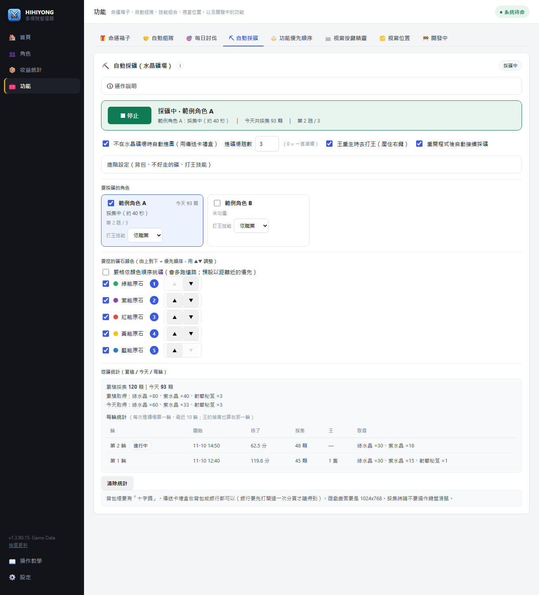
1 2 3- 1狀態列：啟動 / 停止 + 一行摘要（目前狀態、趟數、今天共採幾顆）；採礦卡住、缺入場券時整列變紅。
- 2角色卡片：勾選要採礦的角色，看到每個角色現在的狀態、今天採幾顆、打王用的技能格。
- 3挖礦統計：累積、今天，以及每輪統計（每次進礦場算一輪：待了多久、採幾顆、打幾隻王、取得什麼，王的掉落算在那一輪）。
自動採礦：常用設定與進階設定
- 外面的常用設定：不在礦場時自動進圖、進礦場趟數（0 = 一直循環）、王重生時去打王、重開程式後自動接續採礦。
- 「進階設定」摺疊：背包一直開著、不好走的礦、打王技能欄、右鍵技能代碼（一般不用動）。
- 要挖的礦石顏色：由上到下是優先順序，按住一列拖到想要的位置放開就能調整；預設會優先挑旁邊的礦，不會為了顏色跑遠路。
- 假在線保護：採集動作超過 5 分鐘還沒結束（正常約 60 秒），程式會判定假在線並走自動重新登入，之後接續採礦；可在設定檔 [AutoMining] GatherHangMin 調整分鐘數。
⚖️ 功能優先順序
多個功能想同時用視窗時，依這個順序誰先誰後（排在前面的先做，後面的等它做完）。按住一列拖到想要的位置放開就能調整；例如要讓採礦比每日討伐優先，就把採礦排在上面。
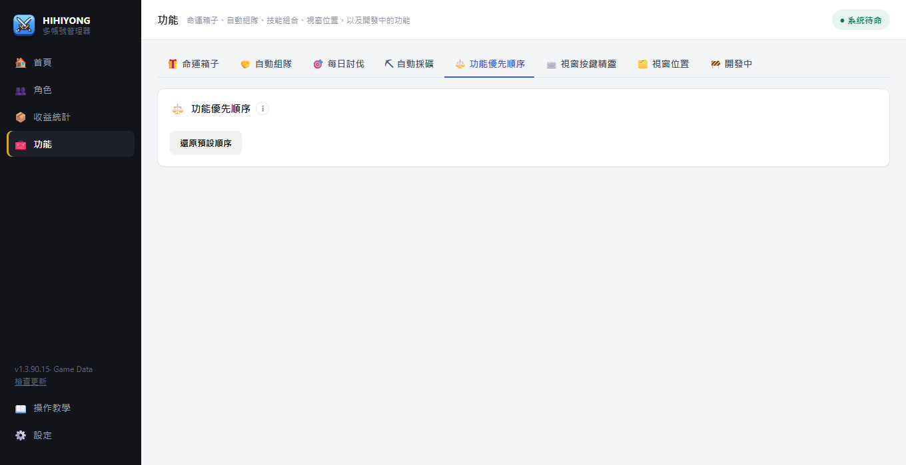
1- 1功能優先順序：由上到下 = 先到後。
⌨️ 視窗按鍵精靈
自己挑要加入的遊戲視窗，每個視窗可自由設定停留秒數和切過去後要按的鍵（多個鍵用逗號，例如 H,W,P），依清單順序輪流切換並按鍵。
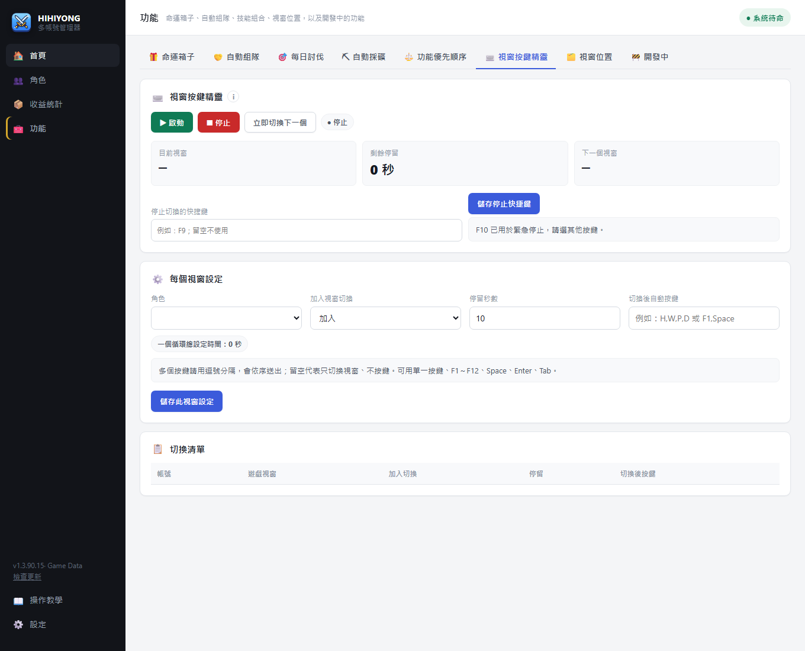
1 2 3 4- 1啟動 / 停止。
- 2這個視窗停留幾秒。
- 3切過去之後按哪些鍵。
- 4每個視窗設好都要儲存。
🗂️ 視窗位置
記錄每個遊戲視窗的位置與大小，開始監控或重新登入後自動還原，避免視窗亂跑。
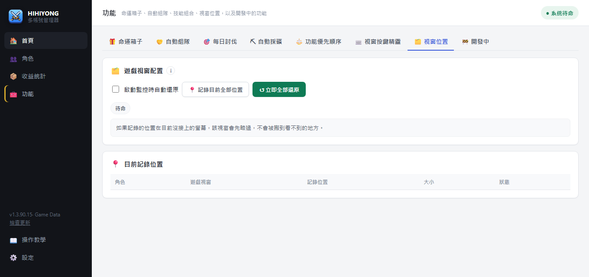
1 2- 1啟動監控時自動還原。
- 2排好視窗後按這個記下來。
🚧 開發中：背包清理
還在調整的功能，建議先在單一角色試用。背包清理：依序清理多個角色的背包。（一鍵連放技能請用「工具 → ✨ 一鍵施法」）
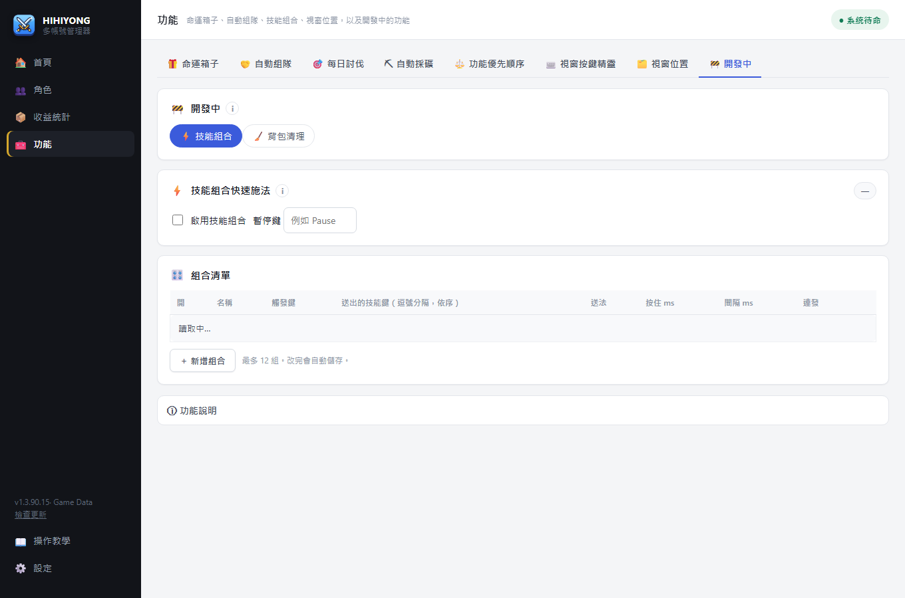
1- 1背包清理（技能組合已拿掉，改用一鍵施法）。
收益統計
「收益統計」：每 5 秒讀各角色背包 / 銀行 / 裝備，和上次比較，統計每天打怪拾取、金幣與道具變化；角色之間互相轉移的不會重複計算。可匯出 CSV；「掉落率」讀遊戲掉落表（已套用伺服器倍率）。
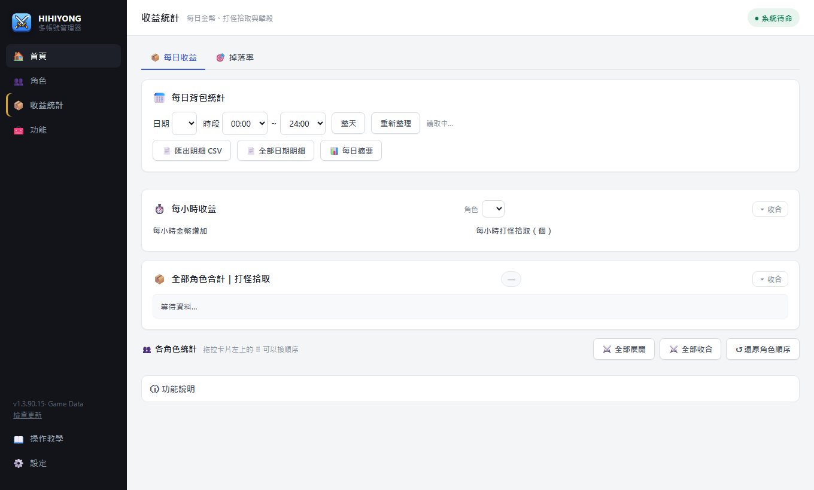
1- 1每日收益。
遊戲改版後會怎樣
遊戲更新後，程式會自動準備新版的資料位置：先看有沒有內建、再到 GitHub 下載、再用 Game.pdb 解析，都沒有時由已登入的遊戲自動推算。期間畫面會顯示「正在等待新版資料位置」，約每 10 分鐘重試；也可以按左下角「檢查更新」。
遇到問題怎麼辦
- 「設定 → 🚀 啟動與登入」→ 系統自檢：檢查常見問題。
- 「設定 → 🧰 其他」→ 開啟執行紀錄：看程式做了什麼；匯出診斷包可以打包成 zip 給協助的人（不含帳號密碼、通知網址、授權檔）。
- 血量一直讀不到：「啟動與登入」→ 重新校正血量讀取。
- 換電腦後自動登入點錯位置：先確認遊戲視窗大小和 Windows 顯示縮放與原本一樣。
- 任何時候覺得不對勁：按 F10 停止所有自動操作。